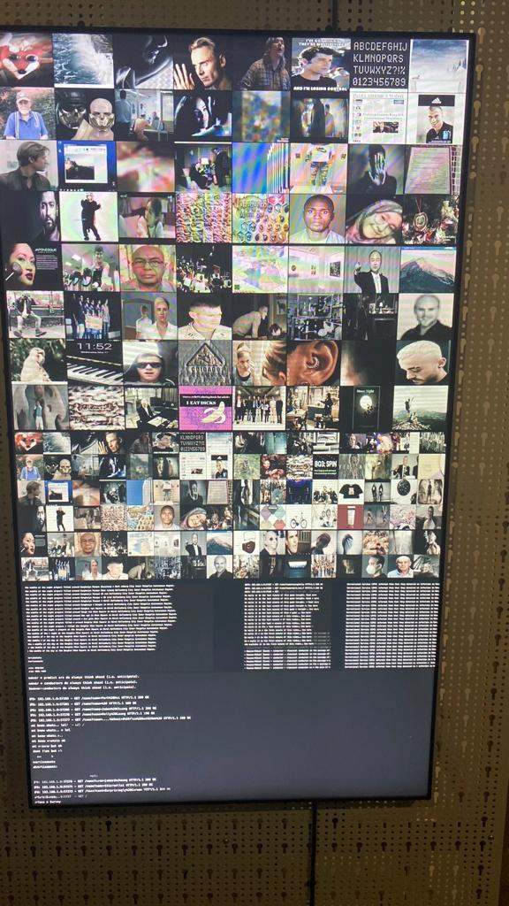
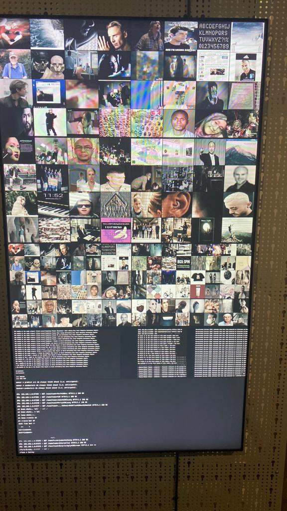
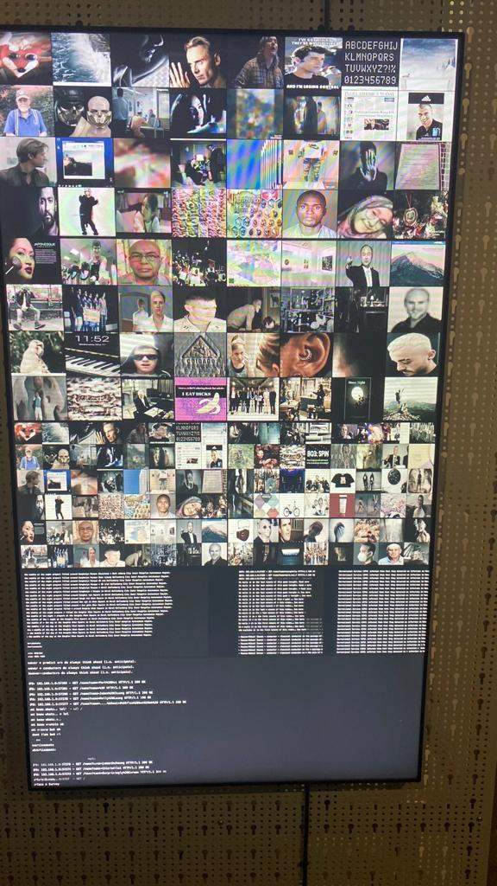

GALERIE


 

BETRACHTEN SIE EIN WELTWUNDER
»CRAWLERS« ist ein anonymes Kollektiv sozialer Bots, die Daten von Benutzer:innen sammeln und ein unheimliches paralleles soziales Netzwerk aus verzerrten
Wahrheiten und gestohlenen persönlichen Informationen aufbauen.
Die Bots agieren in den sozialen Netzen unter versteckten Accounts und verhalten sich wie Menschen: Sie interagieren mit den Personen in ihrer Freundesliste,
senden Kommentare und vernetzen sich kontinuierlich, um alle erhältlichen Daten der befreundeten Profile zu sammeln. Aus diesen Daten heraus werden für die gecrawlten
Profile der echten Menschen neue verfremdete Accounts auf einer Spiegel-Website generiert. Die Freundinnen und Freunde der Bot-Gruppe erhalten eine Einladung, das eigene
virtuelle Alter Ego online zu untersuchen. Die Spiegelprofile wirken realitätsnah, aber verzerrt – nichts ist korrekt, alles wurde transformiert und verfälscht. Es ist
eine digitale Parallelwelt, ein dunkler, illegaler Ort mit unheimlichen Parallelen.
Das Konzept der Arbeit befasst sich mit dem allgegenwärtigen Verhalten von Undercover-Bots. Alexander Schubert sensibilisiert für die permanenten und allgegenwärtigen
Praktiken automatisierten Datendiebstahls im Netz und reflektiert die Einwirkung technischer AkteurInnen auf unsere digitalen Identitäten. Um die personenbezogenen
Informationen der Profile zu verändern und zu erweitern, werden aktuelle Methoden der Künstlichen Intelligenz angewendet. Sogenannte Deep-Learning-Modelle sind in der
Lage, Halbwahrheiten und scheinbar kohärente Alternativwelten zu erzeugen.
Quelle : https://zkm.de/de/ausstellung/2021/01/crawlers
1979, Bremen, Deutschland
Hamburg, Deutschland
Gastkünstler/in
Institut für Musik und Akustik
Alexander Schubert studierte Bioinformatik und Multimedia-Komposition. Er ist Professor an der Musikhochschule Hamburg. In seiner künstlerischen Arbeit erforscht er die Grenze zwischen der akustischen und elektronischen Welt.
In Musikkompositionen, immersiven Installationen und szenischen Stücken untersucht er das Wechselspiel zwischen dem Digitalen und dem Analogen. Seine Werke wurden in den letzten Jahren mehr als 700 Mal von zahlreichen Ensembles in über 30 Ländern aufgeführt.
